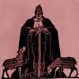

- A lăsat cineva uşa deschisă la lift de nu mai porneşte?
- Nu.
- Atunci înseamnă că l-au oprit ăştia. Cine ştie ce-or face…
oftează a pagubă pensionara sprinţară şi revine în apartamentul ei (ca să vezi, bătrânii care aglomerează străzile de cele mai mult ori chiar nu au vreo treabă urgentă, ci doar chef de plimbare).
Scena se petrece într-un străvechi bloc din mijlocul Bucureştiului, unde doamna în etate aştepta de minute bune liftul pe care nici măcar nu-l chemase.
Bineînțeles că băbuţa nu va suna la Ascensorul ori la administrator şi nici nu va irosi vreo secundă întrebându-se cine sunt, de fapt, ăştia şi ce treabă au ei cu mersul liftului. La fel cum nu îşi va bate capul să reclame nici dacă se opresc gazele, apa, lumina sau cablul TV. Resemnată în spatele replicii „e de la ei”, bătrâna va aştepta la nesfârşit ca furnizorii de servicii să-i ghicească problemele şi să i le rezolve ca prin farmec.
Ei sunt peste tot
Tributari reflexelor fataliste, majoritatea românilor auto-intitulați oameni simpli sunt convinşi că undeva, „bine plasați”, există nişte alți oameni, probabil cei complecşi, care le manevrează destinele. Mucaliții le spun şmecheri sau băieți deştepți. Încrâncenații îi înfierează botezându-i ciocoi şi lichele. Fanii teoriilor conspiraționiste susțin că e vorba de servicii secrete, masoni sau evrei bogați. Sociologii de cârciumă îi confundă cu preşedinția, guvernul sau întreaga clasă politică.
No face, no name, no number
Oricum li s-ar spune, ei sunt un grup nedefinit, fără fețe, nume sau funcții, despre care se ştie doar că trag sfori, manevrează din umbră şi îşi apără interesele. Omniprezenți şi omnipotenți, ăştia se insinuează în viața cotidiană a neputincioşilor oameni simpli, cu singurul scop de a le face zile negre. Ei taie gazele şi salariile, scumpesc acadelele şi carburanții, bruiază telefoanele şi nenorocesc agricultura. Ei măsluiesc, fură, ne lasă copiii muritori de foame şi, bineînțeles, opresc lifturi.
Să încercăm să-i identificăm? Nu, că se acoperă unul pe altul. Să-i ignorăm şi să ne vedem de viețile noastre? Nu, că ăştia vor să ne omoare cu zile. Atunci să ne luăm cearceafurile şi să ne îndreptăm, ordonat, către cimitire? Nici asta nu merge că ei ne-au furat deja locurile de veci, ne-au mâncat colacii şi au scumpit arpacaşul pentru colivă. Alte sugestii?


{kind=link}
alta sugestie? sa tragem cu mitraliera dupa ei, ca in 1989; nici atunci nu stiam cine sunt
Comments on this entry are closed.